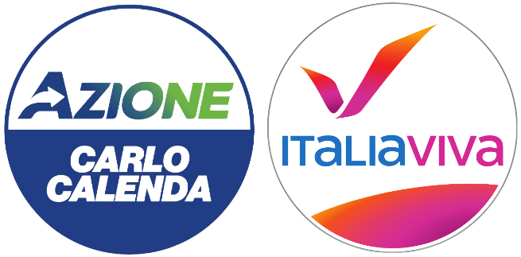
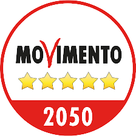

Scopri i partiti
e le coalizioni
Un piccolo ripasso per votare
in modo più consapevole!
Coalizione di centro-destra
La coalizione di centro-destra è composta da: Fratelli d'Italia (Giorgia Meloni), Lega (Matteo Salvini), Forza Italia (Silvio Berlusconi) e Noi Moderati (Maurizio Lupi). I quattro partiti si sono accordati per formare un governo di centro-destra, il cui premier sarà il leader del partito che ha ricevuto più voti. I sondaggi attuali indicano: FdI (24.2%), Lega (13.5%), FI (8.1%) e Noi Moderati (1.5%)
Coalizione di centro-sinistra
La coalizione di centro-sinistra è composta da: Partito Democratico (Enrico Letta), Alleanza Verdi e Sinistra (Angelo Bonelli), Impegno Civico (Luigi di Maio) e +Europa (Emma Bonino). I cinque partiti si sono accordati per formare un governo di centro-sinistra. I sondaggi attuali indicano: PD (21.9%%), Impegno Civico (0.9%), Alleanza Verdi e Sinistra (3.5%) e +Europa (2.2%)
Terzo polo
Il Terzo Polo è nato dall'unione tra Azione (Carlo Calenda) e Italia Viva (Matteo Renzi). I due partiti si presenteranno alle elezioni come un unico partito di centro con a capo Calenda. I sondaggi attuali li pongono al 5.2%
Movimento 5 Stelle
Il M5S si presenterà alle elezioni come un unico partito con a capo Giuseppe Conte. I sondaggi attuali li pongono al 12.1%